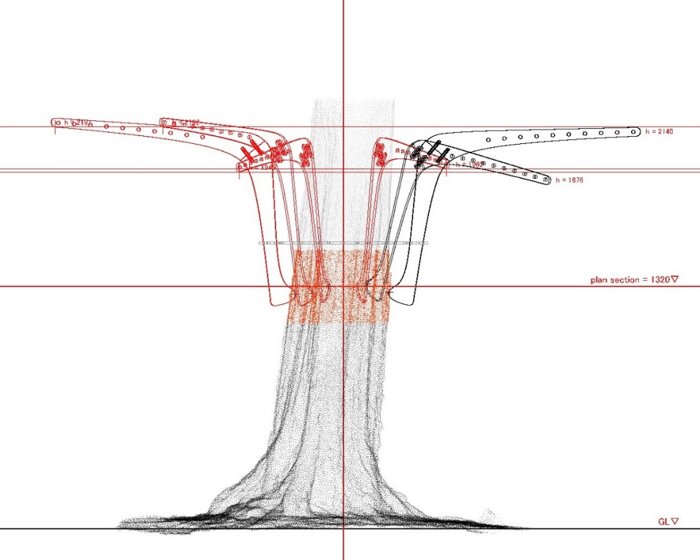
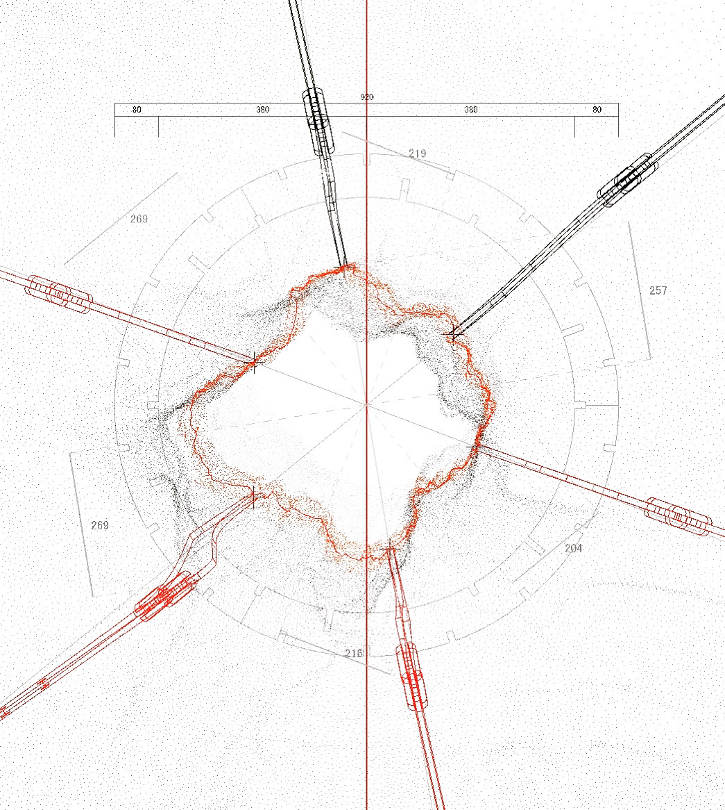
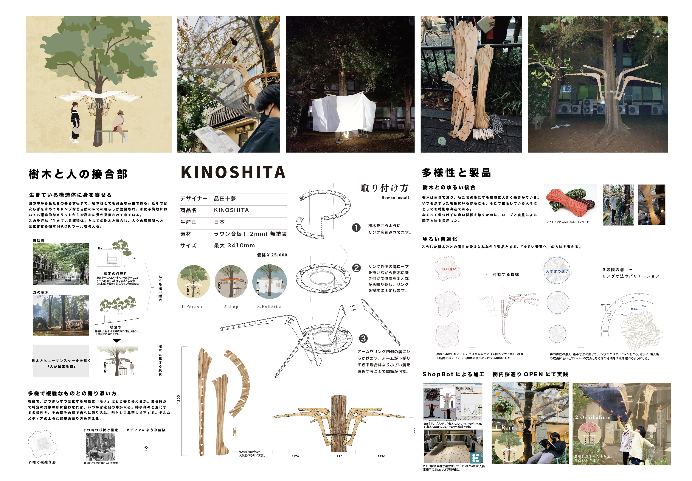

Movable drawings for movable architecture

screen capture of interactive section drawing

screen capture of interactive plan drawing
建築は普通、動かない。しかし、環境に応じて変化し、環境を反映する「媒体」のような建築があったら？
その建築の質を伝えようとした時、図面は動的な変化を伴い始めるだろう。
Architecture does not usually move. But what if there were an architecture that changed in response to its environment and reflected it like a medium? When trying to convey the qualities of such architecture, drawings, too, would begin to undergo dynamic change.
About the product 🌳
「暮らしの接合部」をテーマに合板2枚で作れるプロダクトを提案する課題がVUILD（ShopBotをはじめとする加工技術で、建築・モノづくりの民主化を推し進めるスタートアップ企業）との連携して行われた。
製作したのは、樹木に取り付けることで、木を柱とした屋根のある空間を発生させるプロダクト。
In collaboration with VUILD—a startup advancing the democratization of architecture and making through fabrication technologies including ShopBot—we were assigned to propose a product made from two sheets of plywood around the theme of “connections in everyday life.”
I created a product that attaches to a tree and creates a roofed space with the tree serving as its column.

presentation board
可動の機構を取り入れることで、あらゆる形状の樹木と接合し、その樹木の形状を屋根の高さのリズムに反映することで、樹木とプロダクトが有機的に生き生きと一体感をもつようになる。
そんな環境の媒体としての建築という側面を伝えることができる展示を目指した。
By incorporating a movable mechanism, the product can connect to trees of any shape. Reflecting each tree’s form in the rhythm of the roof heights gives the tree and product an organic, lively sense of unity.
The exhibition sought to convey this aspect of architecture as a medium for its environment.
Interactive drawing system using Rhino & GH 🦏 🦗
Rhinocerosはプロダクトデザインや建築の分野で主に用いられるモデリングソフトである。また、アルゴリズムで形をパラメトリックに決定するGrasshopperという言語が使用できる。
この展示では、このRhinoceros&Grasshopperを基盤としながら、すべての人に触れてもらえる「動的な図面」システムを構築する手法を検証した。
Rhinoceros is modeling software used primarily in the fields of product design and architecture. It can also use Grasshopper, a programming language for determining form parametrically through algorithms.
In this exhibition, I explored a method for building an interactive “dynamic drawing” system based on Rhinoceros and Grasshopper—one that anyone can touch and use.

How we made it ⚙️
Rhinoceros自体は一般的にインタラクティブなシステムとしての使用を前提にはしていないため、いくつかの設定の調整や、外部ソフトウェアとの連携が必須となった。詳細な手順をQiitaにて公開した。
Because Rhinoceros is not generally intended for use as an interactive system, adjustments to several settings and integration with external software were essential. I published the detailed procedure on Qiita.
made with Rhinoceros / Grasshopper / gHowl / GhGL / TouchDesigner
🖥️